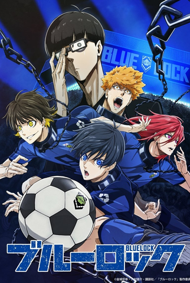
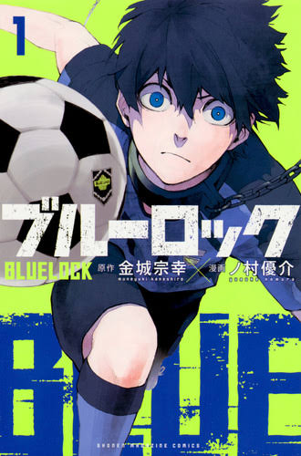
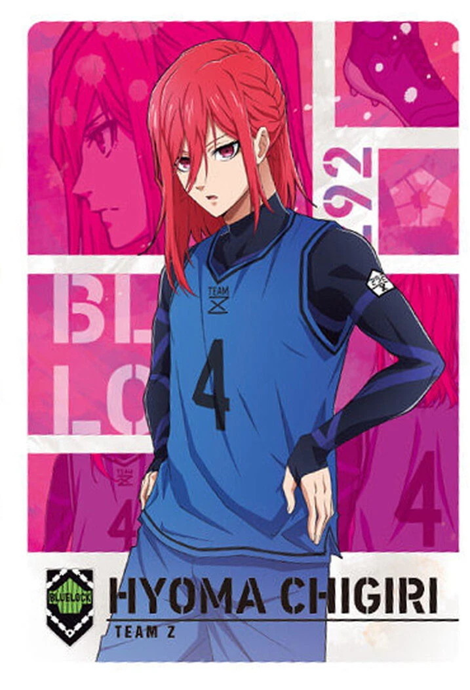
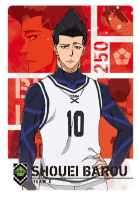
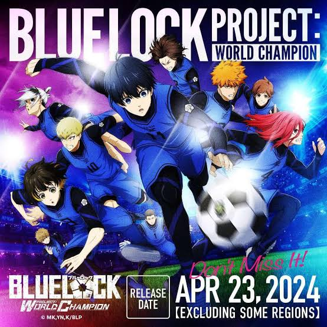

.jpeg)
Meguru Bachira
Drible imprevisível e criatividade pura.

Projeto fictício · Anime de futebol
300 atacantes. Um objetivo. Nasce aqui o camisa 9 que vai mudar o futebol japonês.
Quero conhecer!
O que é Blue Lock?
Depois de uma eliminação difícil da seleção do Japão, a federação cria um plano ousado: reunir 300 jovens atacantes em uma instalação secreta chamada Blue Lock.
O protagonista Yoichi Isagi entra no projeto depois de hesitar no momento decisivo. Lá dentro, ele precisa aprender a pensar como um finalizador: ler o campo, decidir rápido e chutar quando a chance aparecer.
Time Z e rivais
Ilustrações originais inspiradas no visual do anime. Não são artes oficiais.
Drible imprevisível e criatividade pura.
.jpeg)
Chute poderoso e espírito de herói.

Velocidade explosiva na ponta.

O rei da área: finalização egoísta.

O Blue Lock é um complexo fechado, com campos, dormitórios e desafios constantes. Quem não evolui é eliminado. Quem permanece precisa provar, a cada partida, que merece a camisa da seleção.
Mande uma mensagem para o projeto fictício da escola.